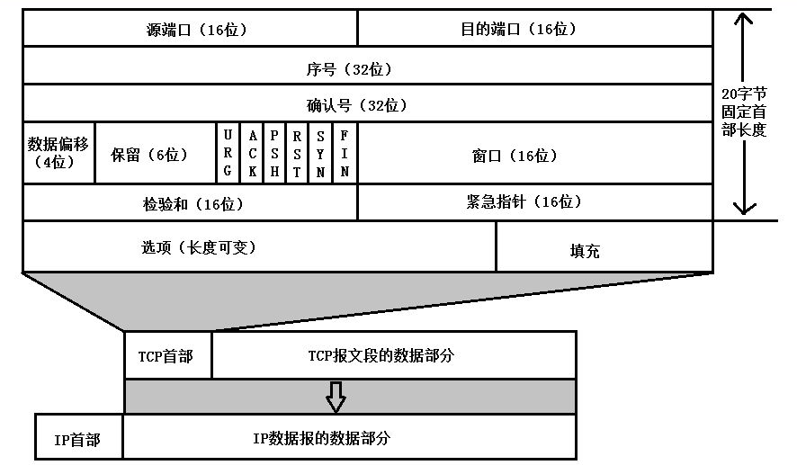
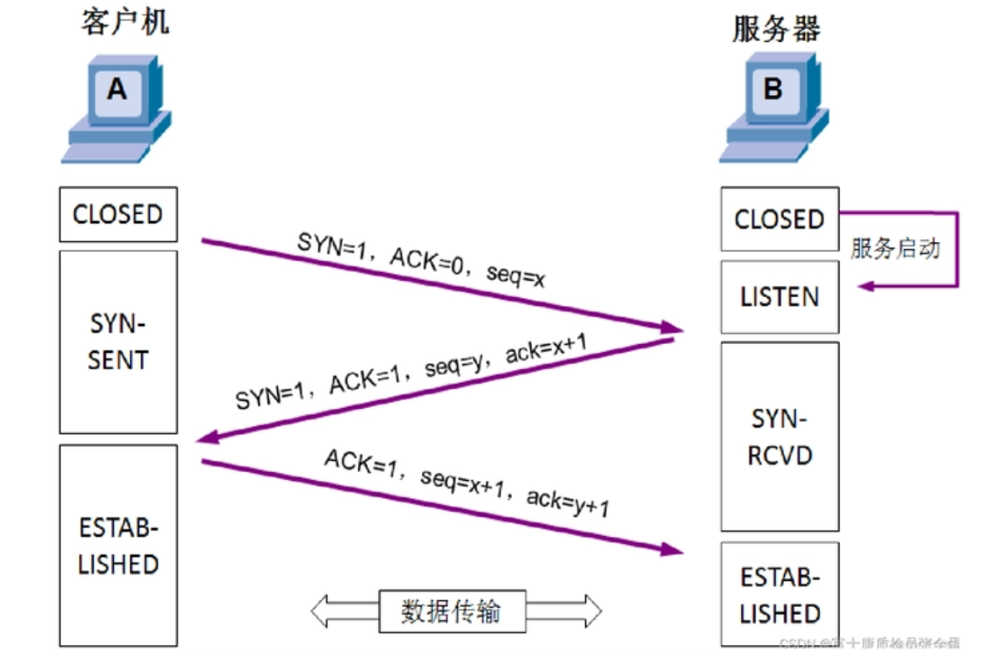
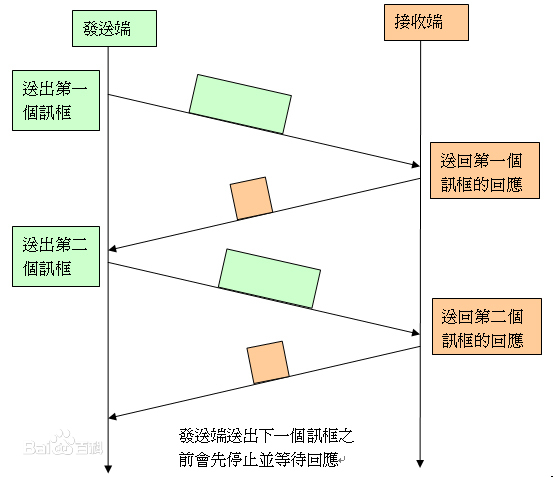
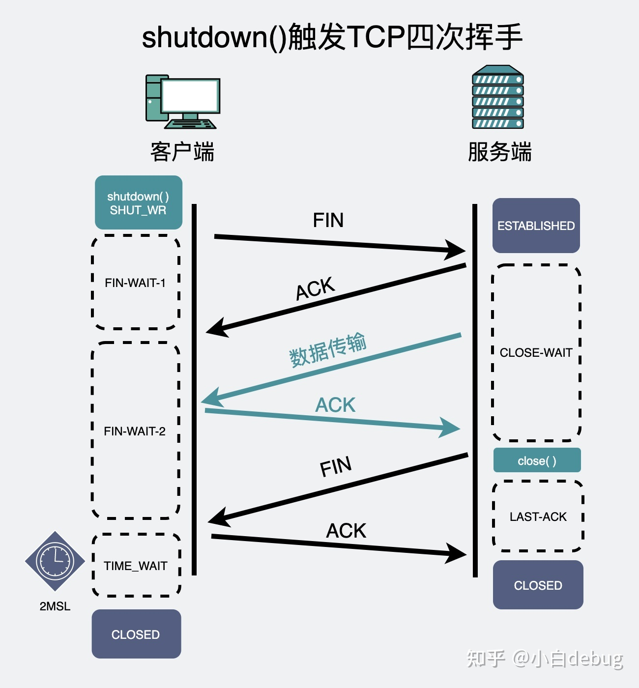
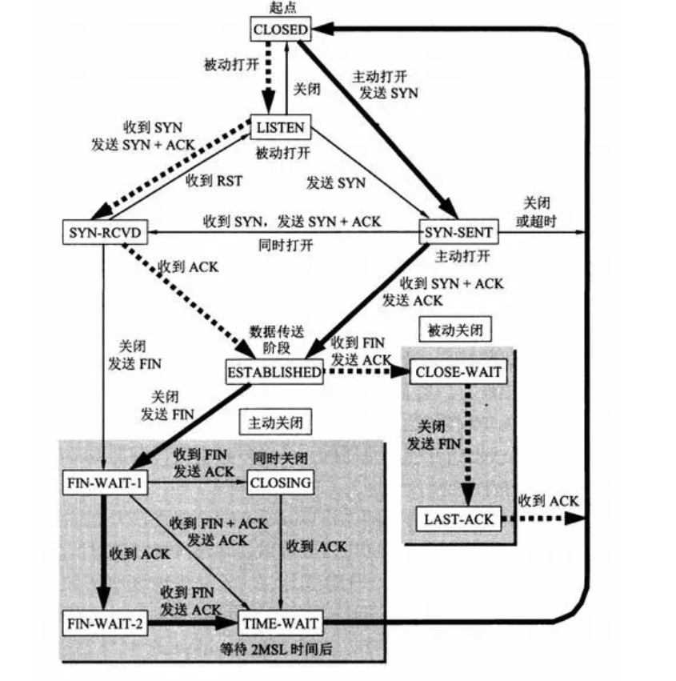
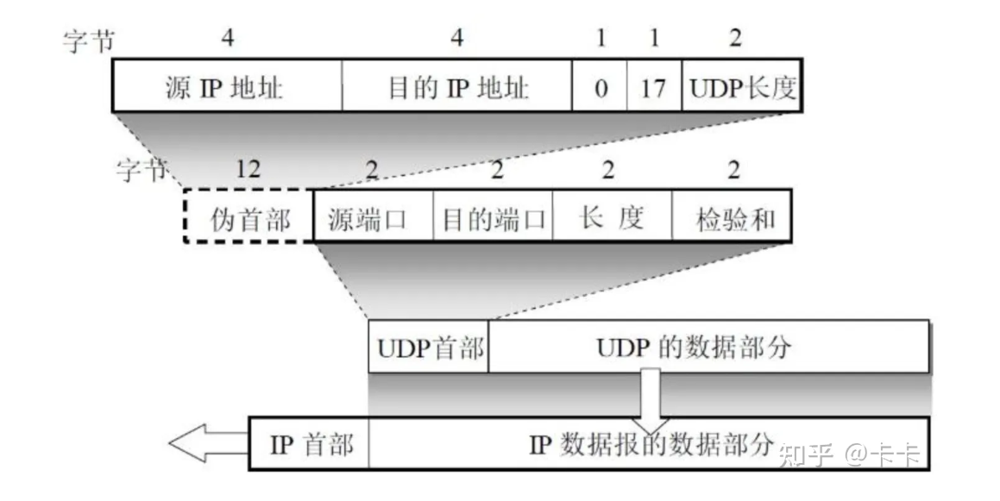

OSI参考模型第四层 传输层原理与技术

概述
传输层功能
- 对来自上层应用的数据进行分段
- 建立终端与终端之间的操作
- 将数据段从一台主机发往另一台主机
- 流控制和可靠性
主要协议
$Transmission~Control~Protocol(TCP)$，传输控制协议，随后还衍生出了流传输控制协议STCP(stream TCP)，是一种可靠传输协议，面向连接需要确认，软件对数据段进行校验，支持重传与流控制(flow control)，不支持组播和广播
$User~Datagram~Protocol(UDP)$，用户数据报协议，是一种不可靠传输协议，但传输速度显著高于TCP，不面向连接不需要确认，虽然会做数据校验，但是如果发现错误直接丢弃报文而不要求重传，并且不提供流控制
服务模型
TCP和UDP协议均是以端口(port)的形式进行识别并跟踪不同的上网进程，每个端口可以绑定一个上网进程，因此通信的双方实际上是进程，计算机总共有0~65535共计65536个端口，根据RFC1700规定软件开发者使用的端口应该为熟知端口，其中0到255端口被保留为TCP，UDP公共应用使用
套接字
$Socket$呈现为IP地址加端口的形式，因此两台设备之间的通信又可以具体化为发出方和接收方的套接字之间的点对点通信
传输控制协议(TCP)
TCP解决的问题
可靠传输问题
TCP需要保证传输数据的正确性/可靠性
流控制
使用窗口的机制缓存数据流量，同时具有避免链路拥塞的问题
连接管理
TCP需要三次握手来完成连接的建立，需要四次握手来完成连接的断开
TCP首部

源与目的端口
端口是传输层和应用层的服务接口，传输层的复用功能需要通过端口来实现。由于端口号的取值范围为0~65535，所以长度均为2个字节
序号
长度为4个字节，TCP数据流（注意是数据流而非报文）中的每一个字节都会编上一个序号，序号字段中的值指的是本报文发送数据的第一个字节的序号
确认号
长度为4个字节，是期望收到对方的下一个报文段的数据的第一个字节的序号
数据偏移
长度为4bit，描述首部长度，也即TCP报文的数据起始处到报文起始处的长度，以4字节为单位
保留
长度为6bit，为今后使用做准备，目前置0
CTL位(Control)
URG
urgent信号，置1表示紧急指针字段有效，也即报文中含有紧急数据，需要以高优先级传输，否则无效
ACK
acknowledge信号，置1表示确认号字段有效，否则无效，一般只有在连接还未完成建立时置0
PSH
push信号，置1表示希望尽快得到接收方的反馈，接收方的TCP收到PSH置1的信号后就不再等待缓存填满再一起交付报文，而是直接将缓存内现有的报文交付。需要注意的是在发出PSH置1的报文时并不优先发送，除非URG信号置1
RST
reset信号，置1表示TCP连接中出现严重差错，需要释放连接后重新建立，例如接收方不同意建立连接的情况
SYN
synchronization信号，置1表示此报文为连接请求或连接接受报文，只在初始化连接时才出现
FIN
finis信号，置1表示发送方不再会发送请求，但会对另一方的请求进行应答，在释放连接时出现
窗口
长度为2字节，限制对方发送窗口的字节数，避免数据过多超出缓存上限，单位为字节
校验和
长度为2字节，校验了首部和数据的全部内容（也包含伪首部）
紧急指针
长度为2字节，指出报文段中紧急数据共有多少字节，紧急数据放在数据段的最前面
选项
TCP首部的选项最初只有最大报文段长度MSS(Maximum Segment Size)来告知对方自己的缓存所能接受的数据字段的最大字节数作为协商内容，后来加入其他选项，同样需要填充齐4字节
TCP协议
传输层交换数据使用的数据结构是数据段，也被称为传输协议数据单元（Transport Protocol Data Unit，TPDU），TCP协议是面向字节流的，因为每一个字节都有一个序号，应答的确认也确认到每一个字节
为保证连接的可靠性，TCP在连接上也设计了一系列机制
建立连接时三次握手(Handshake)

第一次握手
请求方向接收方发送一个SYN位置1（表示连接请求），ACK位置0（因为连接尚未建立），序号字段置为与当前TCP字节流有关的一个值x的数据段，请求建立连接
第二次握手
接收方接收到连接请求后，检查自己相应端口是否有绑定进程，如果没有绑定进程或进程拒绝接入，则回复一个SYN位置1（表示连接请求回复），ACK位置1，序号字段同样依赖于当前TCP字节流（两方TCP各自计数，取为y），ACK位置x+1（因为第x字节以第一次握手的形式已经发送完毕）
第三次握手
请求方接收到接收方的确认信息后，就再次回复一条SYN位置0（表示连接初始化过程完成），ACK位置1，序号为x+1，确认号为y+1的数据段表示确认接收方的确认，接收方接收到这条信息后就认为连接可靠，可以开始传输数据。有时为了提高通信效率，也会在第三次握手时就携带数据开始通信。
定时自动重发(Automatic Repeat reQuest, ARQ)
停止等待协议(Stop-and-wait Protocol)
为了保证可靠传输，不仅要求信道可用，还要求发送和接收的速率相互匹配，数据有效，因此停止等待协议要求发送数据的一方在发送完毕后，需要等待一段时间，直到另一方回复确认信息后才能继续发送数据，如果等待到一定时间（超时）对方仍未回复，则重新发送上一条缓存的数据

其中超时的时间至少是单侧平均传输时间的两倍，因此该协议的效率很低，现已被淘汰
确认丢失(Lost ACK)
如果接收端的确认信息在传输途中丢失，则发送端超时后仍然会重传
确认延迟(Late ACK)
如果接收端的确认信息在传输中延迟抵达，则发送端超时后仍然重传，但对之后收到的确认信息不做响应
持续定时自动重发协议(Contiguous ARQ Protocol)
为了解决停止等待协议传输效率低的问题，设计了持续ARQ协议，引入了滑动窗口协议(Sliding-window Protocol)
机制是发送端维护一个发送窗口，窗口的长度以字节为单位由通信双方协商（在TCP首部中记录），每次连续发送窗口内的所有数据内容，收到一条确认的信息之后窗口就向前滑动一条数据的长度，窗口滑动后又可以发送新进入窗口的数据（前提是窗口大小没有缩水），目前发送到的位置的指针需要由发送端维护
利用这个机制，不仅实现了效率的提高，还实现了对传输的流控制
释放连接时四次挥手

第一次挥手
请求方向接收方发送一个FIN位置1（表示不会再发送请求，但还会应答），序号置为u的数据段
第二次挥手
接收方回复一个ACK位置1，确认号为u+1的数据段
收尾阶段
接收方向请求方发送尚未完成传输的数据，确认号始终置为u+1，期间请求方仍然正常确认
第三次挥手
接收方将数据发送完毕后，向请求方发送一个FIN位置1（表示不会再发送数据），序号置为w，确认号置为u+1的数据段
第四次挥手
请求方收到第三次挥手后，向接收方发送一个ACK位置1（也称为Last ACK），序号置为u+1，确认号置为w+1的数据段，在接收方收到此数据段后，连接正式释放，服务端关闭进程。值得注意的是，为了防止接收端未收到第四次挥手而重传第三次挥手，请求方必须要多等待两倍最大往返时间(2MSL)才能关闭进程，这个动作还有一个重要的作用是防止还有数据段尚未抵达就关闭连接，下一次连接被其他用户使用时可能引起数据暴露(emerging)
TCP计时器
重传计时器为重传计时
坚持计时器避免死锁，有时某一方会限制另一方的窗口长度为0以暂停传输，如果恢复窗口长度的数据段未被收到就产生了死锁，超时后被限制方会发报询问接收方
保持计时器用于协商是否需要保持连接，在第一个数据段发出后开始计时，如果超时就与对方协商断开连接以释放链路资源（如果传输未完成就不断开）
时间等待计时器专用于Last ACK的计时，如果长时间未收到Last ACK就重传第三次挥手
TCP有限状态机

用户数据报协议(UDP)
由于TCP为了保证传输的可靠性做了非常多的控制，导致传输的速率较低。在网络条件较好的情况下，为了追求高速地传输数据，就需要使用UDP，UDP不需要连接建立过程和释放过程的反复确认，简化了首部，不做任何控制，出现的差错由用户程序自行负责（由于服务端程序和客户端程序一般均由同一开发者完成，所以可以自行约定处理方式）
UDP常常应用于流媒体应用的数据传输，它们通常具有能够忍受一定的数据丢失，对传输速率敏感的特点，应用它的协议有RIP(Root Information Protocol)，DNS，SNMP，TFTP和DHCP等
如果需要为传输添加控制，可以由开发者自行定制，因此灵活度很高
UDP首部

UDP的首部只包含源与目的端口，长度和校验和，长度均为2字节，因此最短的UDP报文为8字节，而最短的TCP报文为20字节
其中为了方便计算校验和，TCP和UDP都会加入一个12字节的伪首部（有时还会在末尾填充字段），但这些补充的部分都不会被发送，只是为了便于校验
传输层应用
NAT
$Network~Address~Translation$允许管理员在本地组网时使用私有IP，在广域网上通信时就用此技术将私有地址映射为公网IP，节省了需要的公网地址数量，同时还增加了组网的灵活性，但路由器的翻译过程会带来传输性能上的损失，同时，由于NAT是一对一映射，就导致了如果内网主机数大于公网IP数，能同时上网的主机数会受限
静态NAT
即手动配置固定的NAT转换表
动态NAT
先请求服务的主机先获取到空闲的IP地址（一般从小到大分配），但分配的地址具有生命期
常用术语
$Inside~Local~Address$，内部本地地址，即私有IP地址
$Inside~Global~Address$，内部全局地址，映射为公网IP后对外展示的地址
$Outside~Global~Address$，外部全局地址，例如目的主机地址
PAT
$Port~Address~Translation$将不同IP主机上的服务映射为同一IP主机上不同端口的服务，节约了需要的IP地址数量